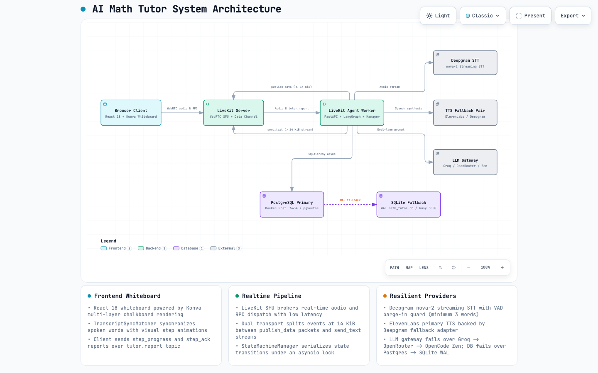
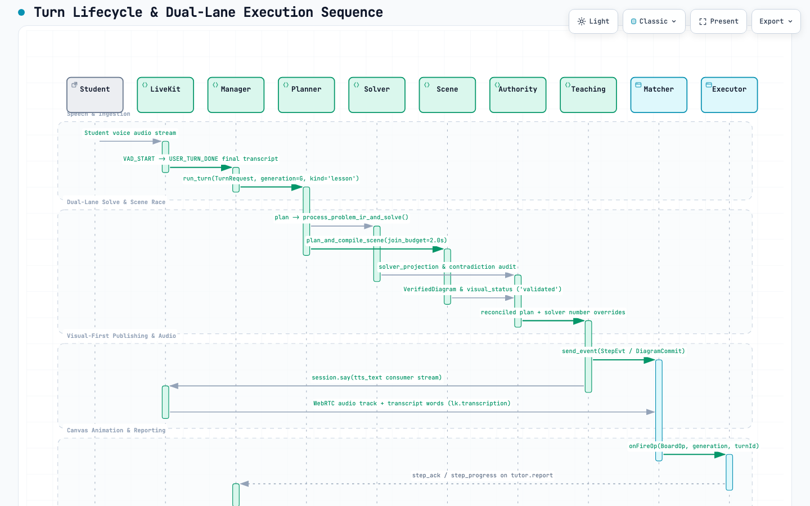
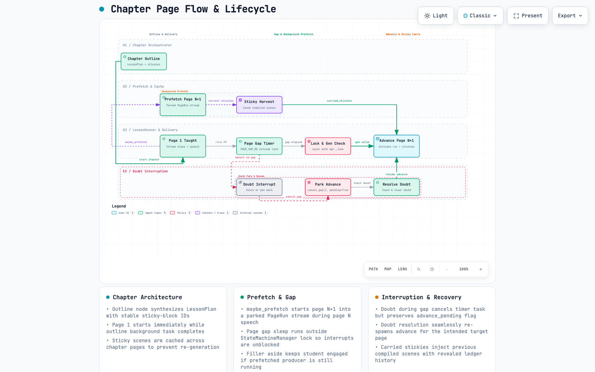

System architecture
The voice agent, LLM gateway, state machine, scene engine and persistence.

Turn lifecycle
From a question to planned steps, board operations, speech and sync.

Chapter page flow
How a topic becomes a multi-page chapter with figures carried forward.